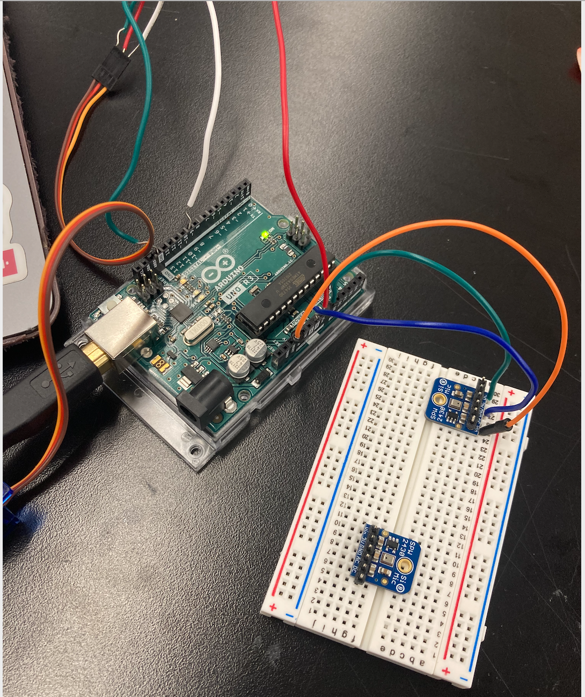

<br>
#### Week 7: Output Devices
In preparation for my final project, I wanted to combine a motor and a microphone, so that if the microphone records a loud sound the motor will start to sweep. I did this by setting up a servo motor and microphone from the output bins in the lab like so:

To code the two to work together, I used the microphone code from the website under input devices and I used the code from the adafruit website from the microcrontroller programming week. I made each into a class. I eliminated the part of the microphone code where it reads what was plotted, instead I had the class function make "peaktopeak" (or the sound level) an output and then in the void (loop) the microcontroller code checks if the microphone class output (the recording of the sound level) is high enough before updating (running) the servo motor.
Here is my code:
<pre><code class="language-arduino">
#include <Servo.h>
class Microphone
{
const int sampleWindow = 50; // Sample window width in mS (50 mS = 20Hz)
unsigned int sample;
int Microphonepin;
unsigned long startMillis= millis(); // Start of sample window
unsigned int peakToPeak = 0; // peak-to-peak level
unsigned int signalMax = 0;
unsigned int signalMin = 1024;
public:
Microphone(int pin)
{
Microphonepin = pin;
}
int GetSoundLevel()
{
while ((millis() - startMillis) < sampleWindow)
{
sample = analogRead(Microphonepin); //reading DC pin from pin A0
if (sample < 1024) // toss out spurious readings
{
if (sample > signalMax)
{
signalMax = sample; // save just the max levels
}
else if (sample < signalMin)
{
signalMin = sample; // save just the min levels
}
}
}
peakToPeak = signalMax - signalMin;
return peakToPeak;
}
};
Microphone mic1(0);
class Sweeper
{
Servo servo; // the servo
int pos; // current servo position
int increment; // increment to move for each interval
int updateInterval; // interval between updates
unsigned long lastUpdate; // last update of position
public:
Sweeper(int interval)
{
updateInterval = interval;
increment = 1;
}
void Attach(int pin)
{
servo.attach(pin);
}
void Detach()
{
servo.detach();
}
void Update()
{
if((millis() - lastUpdate) > updateInterval) // time to update
{
lastUpdate = millis();
pos += increment;
servo.write(pos);
Serial.println(pos);
if ((pos >= 120) || (pos <= 0)) // end of sweep
{
// reverse direction
increment = -increment;
}
}
}
};
Sweeper sweeper1(20);
void setup()
{
Serial.begin(9600);
sweeper1.Attach(9);
}
void loop()
{
// collect data for 50 mS
// max - min = peak-peak amplitude
if (mic1.GetSoundLevel() > 70)
{
sweeper1.Update();
};
}
</code></pre>
[Here is how it works!](https://drive.google.com/file/d/1uc2OSDiGpbnqxct3HT8fy8xpC0hUPJDz/view?usp=sharing). The microphone needs a loud noise to record anything, but if you set it very low (or someone is milling something) you can see the motor responding to the microphone signal!
Here is what the oscilliscope measured for the motor:
<img src="oscmotor.png" alt="Motor Reading" width="100" height="110">
And for the microphone:
<img src="oscmic.png" alt="Mic and Motor Setup" width="100" height="110">